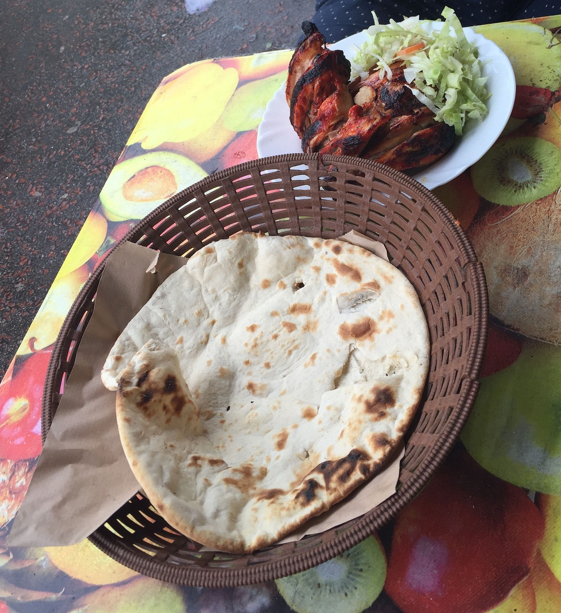

Pita/Naan Bread

Homemade pita bread is a breeze to make and requires only a handful of pantry staples. Simply mix together the easy dough, let it rise, and witness the magic of fresh, warm, perfectly fluffy pita bread. Pita bread is freezer-friendly and can even be made ahead of time, making it the perfect convenience bread.
Ingredients
- Water
- Yeast
- Sugar
- All-purpose Flour
- Salt
- Olive Oil
Steps
- In a large mixing bowl, whisk together 1 cup lukewarm water, yeast, and sugar until dissolved. Add 1/2 cup flour and whisk until combined. Place the mixing bowl in a warm, uncovered place for 15 minutes, or until the mixture is frothy and bubbling slightly.
- Add the salt, olive oil, and remaining flour to the bowl, reserving 1/2 cup for dusting later. Lightly flour the dough and knead it in the bowl for about 1 minute, incorporating any stray bits.
- On a lightly floured surface, knead the dough for 2-3 minutes, or until smooth. Cover and let the dough rest for 10 minutes, then knead again for a few more minutes. The dough should be soft and slightly moist.
- Lightly grease the mixing bowl with olive oil. Return the dough to the bowl and turn it a few times to coat it in the oil. Cover the bowl tightly with plastic wrap and a kitchen towel, and place it in a warm (not hot) place for 1 hour, or until the dough has doubled in size.
- Punch down the dough on a lightly floured surface. Divide the dough into 8 equal pieces and shape them into rounds. Cover with a damp towel and let rest for 10 minutes.
- Roll out one of the dough pieces into an 8-9 inch circle that is about 1/4 inch thick, using a lightly floured rolling pin. Frequently lift and turn the dough as you roll to prevent it from sticking to the counter. If the dough starts to stick, dust it with a small amount of flour. If the dough springs back, let it rest for a few minutes before continuing to roll. Repeat with the remaining dough pieces.
- Heat a cast iron skillet over medium-high heat until a few drops of water sizzle immediately. Drizzle a tiny bit of olive oil and wipe off any excess. Place one rolled-out pita on the skillet and cook for 30 seconds, or until bubbles start to form. Using a spatula, flip the pita and cook for 1-2 minutes per side, or until large toasted spots appear. Flip again and cook for 1-2 more minutes, or until the pita puffs up forming a pocket.
- ENJOY